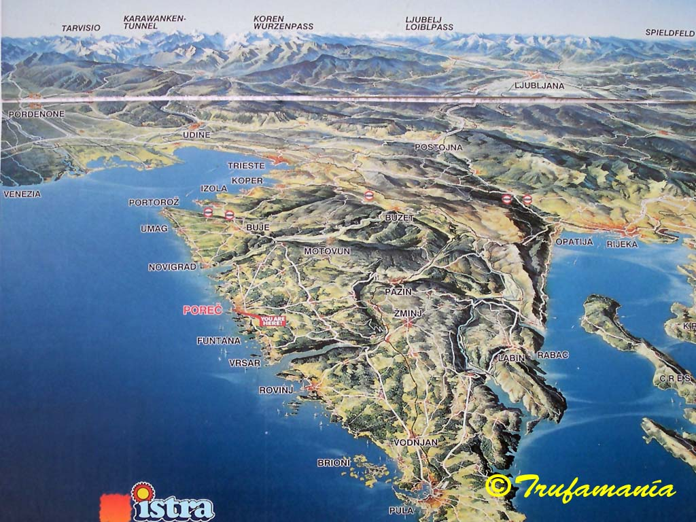
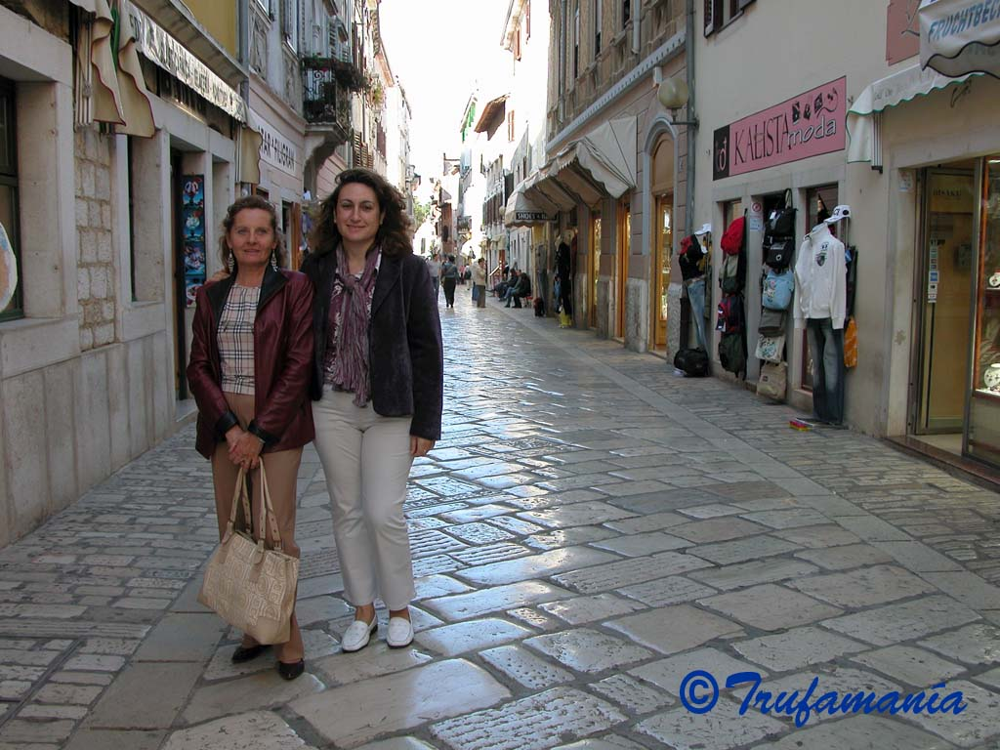
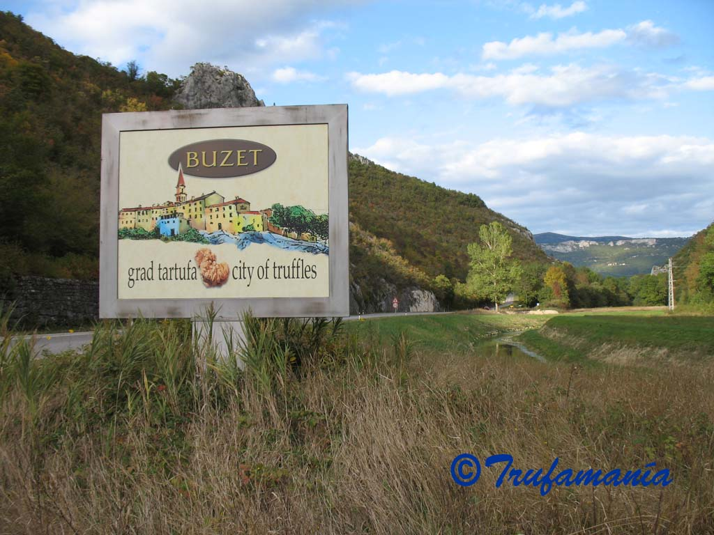
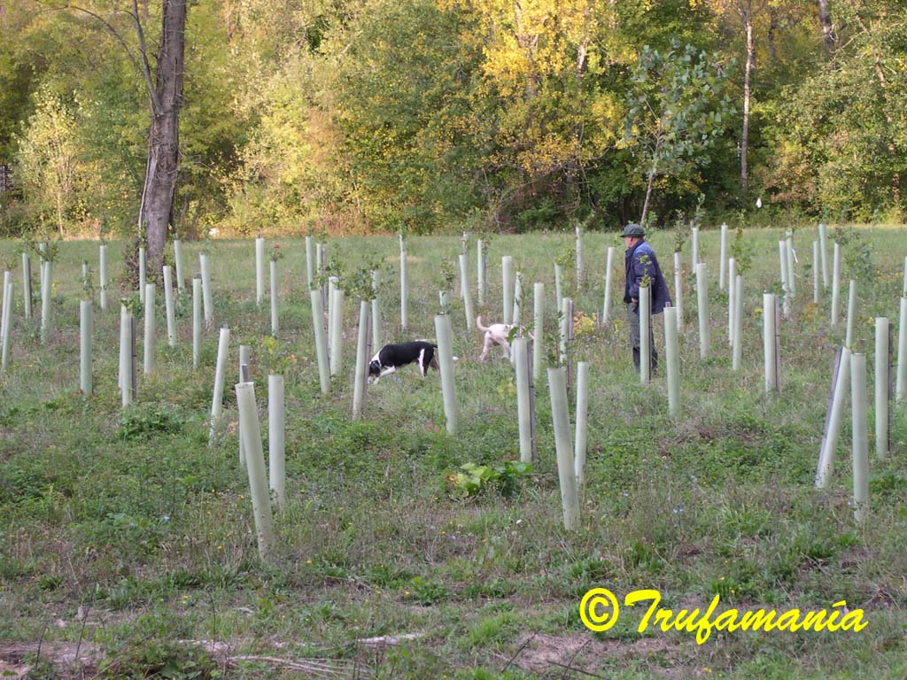
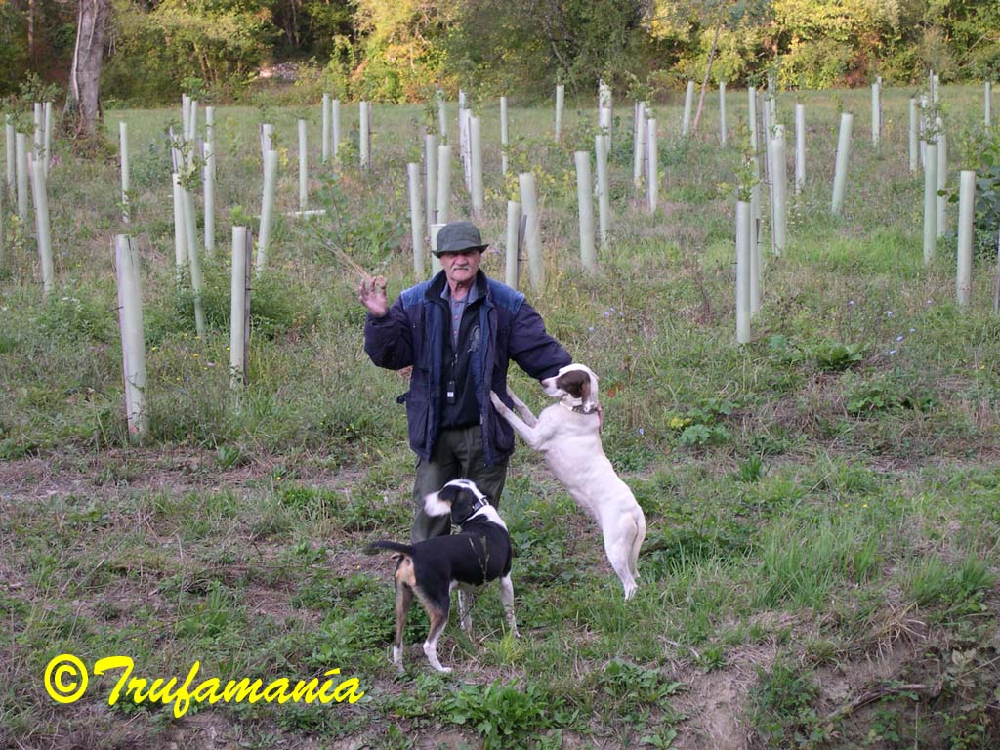

THE ISTRIAN TRUFFLE (Tuber magnatum)
{kind=link}


The Croatian peninsula of Istria lies opposite Venice, barely 100 km across the Adriatic. It is one of the few places outside Italy where Tuber magnatum, the most expensive truffle in the world, can be found. For a long time it was part of the Venetian Republic, and symbols of that era are the numerous winged lion reliefs that adorn virtually every corner. The white Istrian stone was used by the Venetians to build many of their palaces and to pave St Mark’s Square. 
{kind=link}
The Venetians also exploited the timber of Istria’s inland forests to build their ships, clearing large areas of the river floodplains that form the natural habitat of Tuber magnatum in Istria.
The oak woodland near Motovun, in the floodplain of the Mirna river, is one of the finest places to search for the prized white truffle, and that is where we headed.
{kind=link}
On arriving at the Motovun forest we immediately came across a truffle hunter who had not had much luck and had found nothing. This surprised us, since in Italy hunters go out at night and in secret. He was working with several very small dogs — well suited to the dense, overgrown undergrowth. We examined the soil: grey and highly macroporous. Truffles here are harvested in deeply shaded areas with dense vegetation and no sign of the “brûlé” typical of Tuber melanosporum habitats. The dominant tree species of Motovun Forest are Quercus robur, Fraxinus angustifolia, Carpinus orientalis, Acer campestre, Ulmus minor, Alnus incana, Populus spp. and Salix spp.
Truffles have been harvested in Motovun forest since 1930, but production has declined considerably over the last 30 years as a result of habitat degradation.
{kind=link}


Tuber magnatum (FULL DESCRIPTION) requires a moist but well-drained, alkaline soil with high macroporosity. In Motovun forest this is achieved through the continuous input of alkaline particles eroded from the surrounding slopes. This constant, irregular redeposition creates soft, highly porous soils with interconnected channels that allow truffles and the aerobic organisms they depend on to breathe. Earthworms play a crucial role in maintaining this porosity and in accelerating the decomposition of plant debris. Every productive truffle area we visited showed the characteristic earthworm casts that signal their activity.
{kind=link}
Following the Mirna valley, we made our way to Buzet, the “City of Truffles”, where we were fortunate to encounter another truffle hunter walking the banks of the Mirna with his two dogs. Near Sovinjak, in a spot with nothing but a few poplar stumps and some young oaks still in their protective tubes, we watched him extract several truffles. We would never have imagined such a habitat, though the soil was identical to that of Motovun forest: grey, stoneless and macroporous.
{kind=link}

{kind=link}

{kind=link}

The following day, at dusk, we came across the same truffle hunter doing the same route and collecting several more. He mentioned that a buyer came from Milan every week to purchase his Tuber magnatum.
{kind=link}
Our trip ended in Livade, a small village on the banks of the Mirna opposite Motovun, where Giancarlo Zigante organises an annual fair dedicated to the Istrian Tuber magnatum. In 1999, Zigante found a white truffle near Livade weighing 1.31 kg that held the Guinness World Record until relatively recently (in 2007 a Tuber magnatum weighing 1.5 kg was found near Pisa).
{kind=link}
{kind=link}


I should add that my friend Justo and I also found two Tuber magnatum — small ones, but we were absolutely delighted.
{kind=link}
 |
Antonio Rodríguez trufamania@gmail.com antonio@trufamania.com |